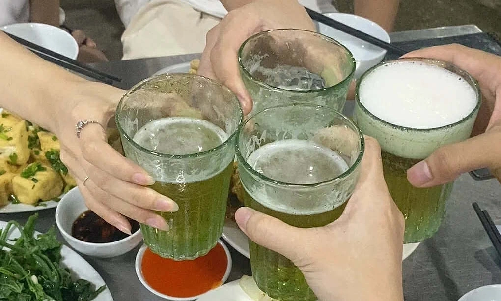

(Vnexpress) - Bác sĩ hướng dẫn cách uống rượu bia ngày lễ ít gây hại
Không để bụng đói, không pha chế với nước ngọt, uống nhiều nước, kiểm soát tốc độ uống và lượng uống để giảm thiểu nguy hại khi uống rượu bia ngày lễ.
Dịp lễ, mọi người có xu hướng uống nhiều rượu bia, đồ uống có cồn để thư giãn và gắn kết tình cảm. Tuy nhiên, niềm vui ấy đôi khi lại vô tình trở thành "gánh nặng" cho sức khỏe nếu không biết cách kiểm soát.
PGS.TS Nguyễn Quang Dũng, Phó trưởng Bộ môn Dinh dưỡng và An toàn thực phẩm, Đại học Y Hà Nội, hướng dẫn cách uống để giảm thiểu nguy hại sức khỏe, cụ thể:
Sai lầm lớn nhất là uống rượu bia khi bụng rỗng. Nạp một chút thức ăn trước khi bắt đầu giúp tạo một lớp màng bảo vệ dạ dày, đồng thời làm chậm quá trình hấp thụ cồn vào máu.
Hãy ăn nhẹ các thực phẩm giàu protein, chất béo lành mạnh (như các loại hạt, sữa chua, hoặc một bát cơm/cháo) trước khi bắt đầu buổi tiệc. Sau uống rượu, bạn nên ăn xoài, nho, cam, lê, chuối, dưa hấu vì có nhiều nước, giúp bù nước.
Chuối cũng là loại trái cây có thể ăn do chứa nhiều carbohydrate, giúp tránh bị rỗng dạ dày, giúp tăng lượng glucose trong máu, bù đắp kali bị thiếu hụt do uống rượu và đi tiểu nhiều.
Rượu bia là tác nhân gây mất nước cho cơ thể. Để giảm tải cho gan và thận, mọi người nên duy trì nguyên tắc uống xen kẽ, cứ một ly rượu/bia thì uống một ly nước lọc. Nước giúp pha loãng nồng độ cồn trong máu, tăng cường bài tiết qua đường nước tiểu và giúp bạn cảm thấy nhanh no hơn, từ đó kiểm soát được lượng tiêu thụ.
Sau khi uống rượu, mọi người có thể uống nước gừng để giải rượu. Gừng có vị nóng làm cho các mạch máu lưu thông tốt hơn, từ đó hóa giải nhanh chất cồn trong cơ thể. Có thể cho thêm vào nước gừng nóng một thìa nhỏ mật ong để có thể hấp thụ nhanh và giúp giải say rượu. Một số thức uống khác như nước chanh, nước cam, nước dừa, mía, sắn dây, dưa hấu cũng giải rượu hiệu quả.
Gan chỉ có khả năng xử lý một lượng cồn nhất định trong mỗi giờ. Nếu uống quá nhanh, nồng độ cồn trong máu tăng vọt, gây "sốc" cho hệ thần kinh và gan. Hãy nhâm nhi và giao lưu thay vì uống theo kiểu "cạn ly". Tốc độ uống chậm giúp cơ thể có thời gian chuyển hóa cồn hiệu quả hơn.
Tổ chức Y tế thế giới (WHO) quy định một đơn vị cồn tương đương với 10 g cồn ethanol nguyên chất, bằng 200 ml bia; 75 ml rượu vang (một ly); 25 ml rượu mạnh (một chén). Tùy vào lượng uống sẽ quy ra khoảng bao nhiêu đơn vị cồn.
Nhiều người có thói quen trộn rượu với nước tăng lực hoặc nước ngọt có gas. Pha rượu không rõ nguồn gốc, pha theo cảm tính, không có công thức, tỷ lệ... uống có nguy cơ ngộ độc, như buồn nôn, nôn, đau đầu, chóng mặt, đau bụng, nặng hơn nữa là rối loạn tri giác, mất ý thức, hôn mê, tử vong.
Khi uống rượu pha, nhiều người cảm thấy dễ bị say, chóng mặt, mệt mỏi, uể oải hơn. Người bị suy giảm miễn dịch, người có bệnh mạn tính như gan, thận, dạ dày, đại tràng, ung thư càng không nên tự ý pha hay lạm dụng rượu.
Sau uống rượu, bạn không nên uống các loại thuốc giảm đau đầu, như paracetamol rất nguy hiểm. Đây cũng không phải thuốc để giải rượu hay giảm cảm giác say rượu, mệt mỏi.
Quan trọng nhất vẫn là bản lĩnh từ chối đúng lúc, đặc biệt khi cảm thấy chóng mặt, buồn nôn hoặc mất kiểm soát hành vi. Đây là tín hiệu "báo động đỏ" của cơ thể yêu cầu bạn dừng lại ngay lập tức. Đừng vì nể nang mà phải trả giá bằng chính sức khỏe của mình.

Mọi người nên ăn lót dạ trước khi uống rượu bia, không uống quá nhiều.
Tuy nhiên, sử dụng quá nhiều rượu, bia, đồ uống có cồn có thể dẫn tới các vấn đề sức khỏe về tim mạch, gan, thận, tuỵ, thần kinh, nội tiết. "Mọi biện pháp trên chỉ là phương án giảm thiểu", bác sĩ nói.
Cách bảo vệ sức khỏe tốt nhất trong những ngày lễ là uống có chừng mực, có văn hóa và luôn ưu tiên sự an toàn cho bản thân cũng như những người xung quanh, không lái xe sau khi sử dụng đồ uống có cồn.
Mỗi ngày nam giới không nên uống quá 720 ml bia hoặc 300 ml rượu vang hoặc 60 ml rượu whisky. Đối với nữ giới, mỗi ngày không nên uống quá 360 ml bia hoặc 150 ml rượu vang hay 30 ml rượu whisky. Không để cho trẻ em và vị thành niên uống rượu bia. Cố gắng kiểm soát lượng uống ở mức nguy cơ thấp nhất trong một lần.
Khi thấy biểu hiện đau đầu, đau bụng, chóng mặt, hạ thân nhiệt, huyết áp, nhìn mờ bóng mây sau uống rượu, người dân cần tới các cơ sở y tế gần nhất để được thăm khám và điều trị kịp thời.
BÌNH LUẬN